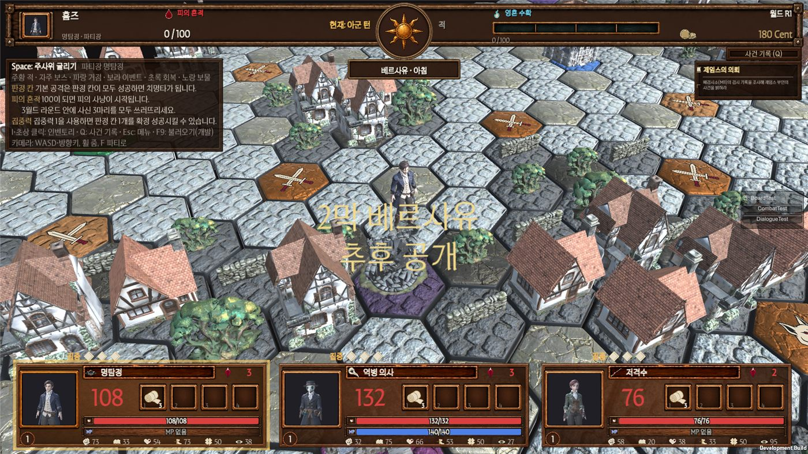

마감: 게임 완성은 11/18입니다. 11/16부터는 고치기만 합니다. 그래서: 아래 6개는 11/14까지 답이 있어야 넣을 수 있습니다. 답하는 법: 번호와 고른 칸만 적어 주세요. 예) "Q2 넣기", "Q3 B". 함께 보낼 것: 이미 넣은 변경 21개는 "11/15 기획 검수 자료"에 따로 정리했습니다.
1. 한눈에 보는 목록
번호
질문
중요도
언제까지
Q1
크레딧: 팀원 이름·역할, 글꼴 출처 문구
꼭 필요
11/14
Q2
1막 대사·의뢰·엔딩 문구 최종본
꼭 필요
11/15
Q3
보드 왼쪽 안내 창 줄이기
있으면 좋음
11/14
Q4
야영 텐트 연출 넣을지
있으면 좋음
11/14
Q5
그림 없는 아이템 58개 중 먼저 그릴 것
있으면 좋음
11/13
Q6
전투 배경 A 검수를 11/15에 같이 할지
확인만
11/14
Q1크레딧 문구 꼭 필요
메인 메뉴 아래 글에 넣습니다. 음원 출처는 11/11에 이미 넣었습니다.
필요한 것 ① 팀원 이름과 역할 (보이는 순서대로) ② 글꼴 ZEN SERIF 출처 문구.
11/11 개발 회신서에서 요청한 것과 같습니다. 아직 못 받았습니다.
답: 이름·역할 목록 / 글꼴 문구
Q21막 대사·의뢰·엔딩 문구 최종본 꼭 필요
지금 게임에는 시스템이 다 들어 있고, 글은 기획서 초안 그대로입니다.
최종 글을 주시면 바로 바꿔 넣습니다. 칸 모양은 바꾸지 않아도 됩니다.
11/15까지 못 주면 지금 초안으로 마감합니다.
답: ☐ 11/15까지 줌 (날짜 ___) ☐ 지금 초안으로 마감
Q3보드 왼쪽 안내 창 줄이기 있으면 좋음
보드 왼쪽 위 안내 창이 8줄이라 화면을 많이 가립니다 (아래 사진 왼쪽 위).
11/11에 기획 문구(판정 칸·피의 흔적·집중력) 3줄을 넣으며 더 길어졌습니다.
안
모양
A
그대로 둠
B (추천)
첫 월드 라운드만 다 보여 줌. 그 뒤엔 "Space 주사위 · I 가방 · Q 사건 기록" 한 줄만. F1로 다시 펼침
C
접기 버튼만 달고 처음엔 펼쳐 둠

왼쪽 위가 안내 창
답: ☐ A ☐ B ☐ C
Q4야영 텐트 연출 있으면 좋음
3D 쪽에서 텐트 모델과 메모를 받았습니다: "안개 야영 세트를 쓰면 서 있는 칸에 텐트가 생기게".
기획서에 없는 연출이라 OK가 있어야 넣습니다. 넣으면 반나절 걸립니다.
텐트가 언제 사라질지도 정해 주세요.
답: ☐ 넣기 (사라지는 때: ☐ 다음 이동 ☐ 다음 월드 라운드) ☐ 안 넣기
Q5그림 없는 아이템 58개 — 먼저 그릴 것 있으면 좋음
받은 25개 말고 58개는 지금 종류 아이콘(임시)으로 보입니다.
디자인이 다 그리기는 어렵습니다. 1막에 실제로 나오는 것부터 골라 주세요.
골라 주시면 디자인 요청서(D5)에 그대로 옮깁니다.
종류
이름
소모품 11
고급 마력의 영약 · 고급 생명의 영약 · 냉각 수은 연고 · 룬 기관차 탑승권 · 마녀의 뼈 · 만능 정화제 · 백색 로즈마리 · 봉합 수리 도구 · 성유 은탄 · 철심 강장제 · 통찰의 증류액